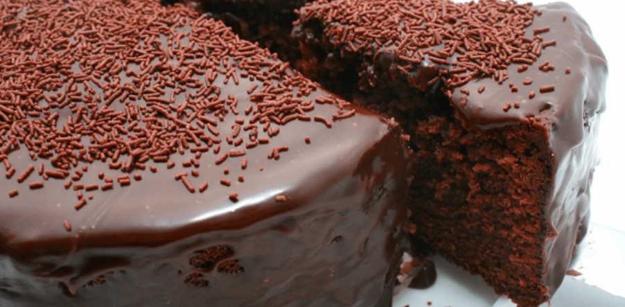

Página 03 - receita de bolo com listas
Receita de Bolo de Chocolate

Ingredientes - Massa
- 3 ovos
- 1 xícara e 1/2 de chá de açúcar
- 1/2 xícara de chá de óleo
- 1 xícara de chá de chocolate em pó
- 2 xícaras de chá de farinha de trigo
- 1 xícara de chá de água quente
- 1 colher de sopa de fermento em pó
Ingredientes - Cobertura
- 1 xícara e 1/2 de chá de leite
- 1/2 xícara de chá de chocolate em pó
- 1 colher de sopa de manteiga
- 1 xícara de chá de açúcar
Modo de Preparo - Massa
- Em uma tigela, coloque 3 ovos, 1 e meia xícara de chá de açúcar, meia xícara de chá de óleo, 1 xícara de chá de chocolate em pó e 2 xícaras de chá de farinha de trigo. Misture delicadamente os ingredientes.
- Em seguida, adicione 1 xícara de chá de água quente, 1 colher de sopa de fermento em pó e bata até ficar homogêneo.
- Transfira a massa para uma forma untada e enfarinhada com uma mistura de farinha de trigo e chocolate em pó. Leve para assar em forno preaquecido a 180 graus Celsius por 40 minutos.
Modo de Preparo - Cobertura
- Em uma panela, coloque 1 e meia xícara de chá de leite, meia xícara de chá de chocolate em pó, 1 colher de sopa de manteiga e 1 xícara de chá de açúcar. Misture, ligue o fogo e deixe ferver.
- Despeje a calda no bolo ainda quente e sirva em seguida.